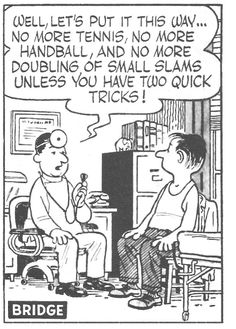
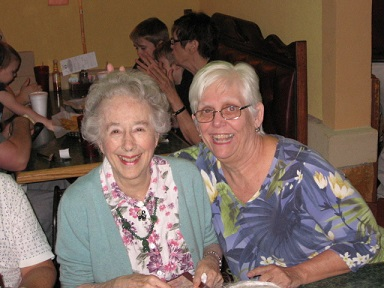
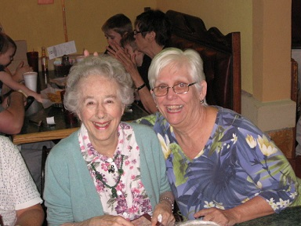

Recent results
Statesboro Pairs Tuesday Eve Session January 29, 2019
Scores after 21 boards Average: 31.5
Pair Pct Score Rank
3 67.46 42.50 1 1 Emma Mao - Eleanor Schneider
8 62.70 39.50 2 2 Verna Hickman - Jane Sack
2 54.76 34.50 3 3 Elaine Lantz - Bill Eller
4 48.41 30.50 4 4 Mary Miller - Virginia Trapnell
Statesboro Pairs Tuesday Eve Session January 22, 2019
Scores after 18 boards Average: 24.0
Pair Pct Score Rank
8 67.71 32.50 1 1 Andrea Leonardi - Bruce McLean
6 65.63 31.50 2 2 Emma Mao - Eleanor Schneider
4 54.17 26.00 3 3 Verna Hickman - Jane Sack
1 51.04 24.50 4 4 Jean James - Li Li
9 45.83 22.00 5 5 Jean Johnson - Chuck Johnson
Statesboro Pairs Tuesday Eve Session January 15, 2019
Scores after 21 boards Average: 31.5
Pair Pct Score Rank
3 59.52 37.50 1 1 Cathy Shriver - Julie Miller
4 57.14 36.00 2 2 Jean Johnson - Chuck Johnson
6 54.76 34.50 3 3 Verna Hickman - Jane Sack
1 48.41 30.50 4 4 Ruth Ann Rogers - Jerry Thomas
Statesboro Pairs Tuesday Eve Session January 8, 2019
Scores after 18 boards Average: 24.0
Pair Pct Score Rank
6 68.75 33.00 1 1 Eleanor Schneider - Emma Mao
9 62.50 30.00 2 2 Jean Johnson - Chuck Johnson
3 53.13 25.50 3 3 Mary Miller - Virginia Trapnell
2 50.00 24.00 4 4 Verna Hickman - Jane Sack
5 47.92 23.00 5 5 Elaine Lantz - Bill Eller
|

The next game is this Tuesday
starting at
7:00 on the dot. Be on time.
Please contact Chuck if you want to play.
* * * Some hands * * *
Let me know which ones you want to see
Here is March 20 board 18.
What is interesting
is a heart lead keeps the contract to 3 NT. A spade
lead permits 5.
Pairs 4 AND 8 defended correctly while
Eller - Lantz defeated the contract.
|

This week's winners
|
Statesboro Pairs Tuesday Eve Session February 5, 2019
Scores after 18 boards Average: 24.0
Pair Pct Score Rank O/A
7 71.88 34.50 1 1 Ruth Ann Rogers - Jerry Thomas
8 66.67 32.00 2 2 Verna Hickman - Jane Sack
1 56.25 27.00 3 3 Jean James - Li Li
5 47.92 23.00 4 4 Andrea Leonardi - Bruce McLean
3 46.88 22.50 5 5 Mary Miller - Nancy Davis
|
Duplicate Basics
Some commonly used conventions.
Please make suggestions for improvement
Weekly sign-up sheets
Contact numbers with emails
Round ending times.
|


 
